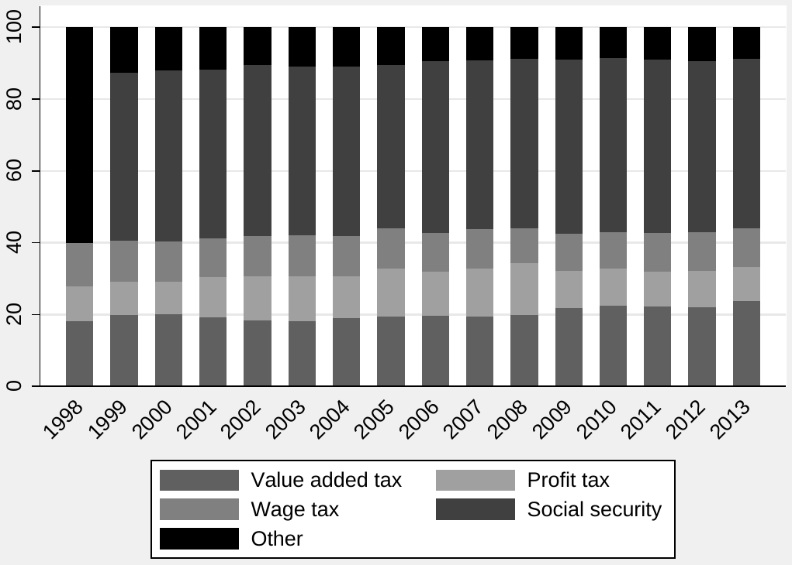
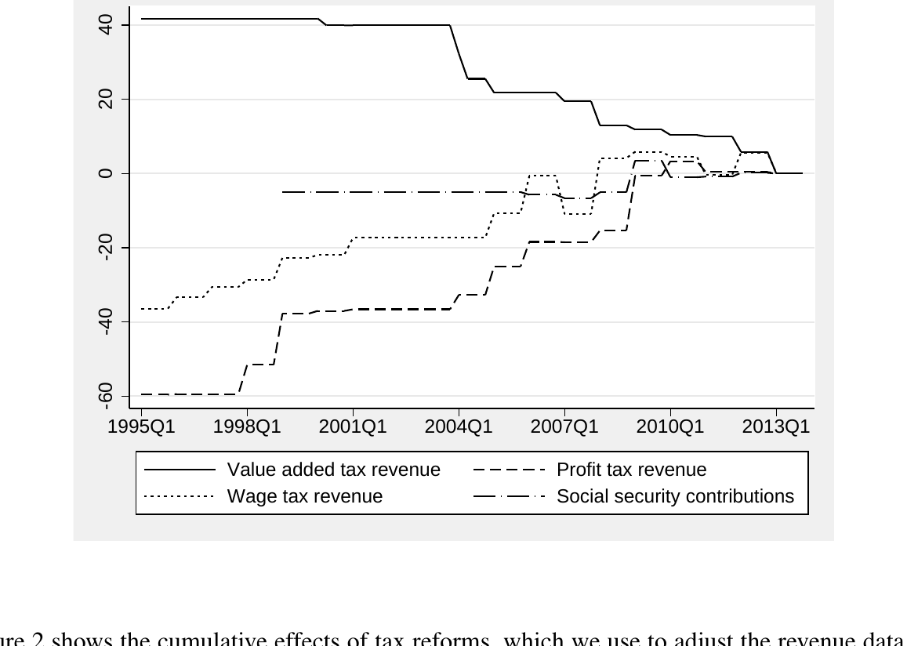
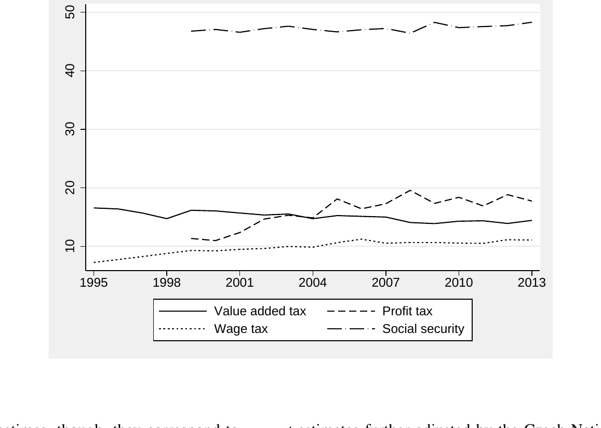
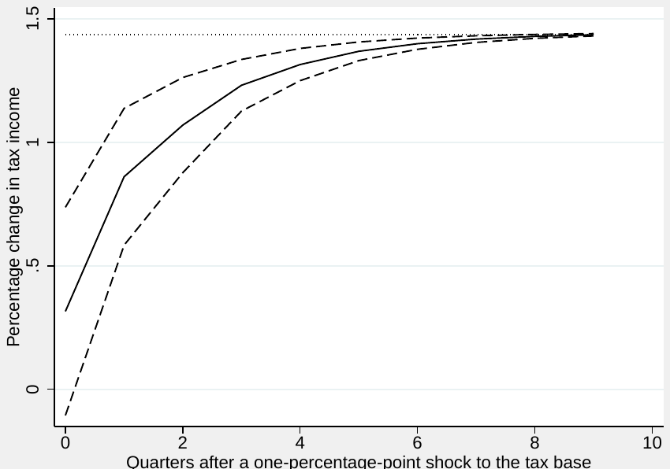
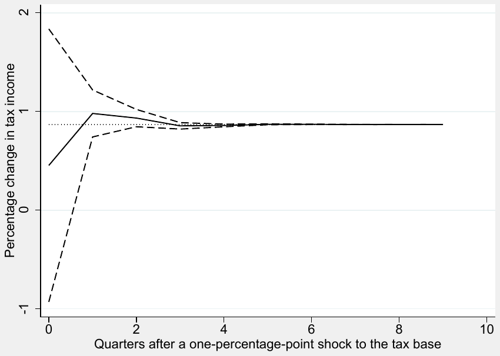
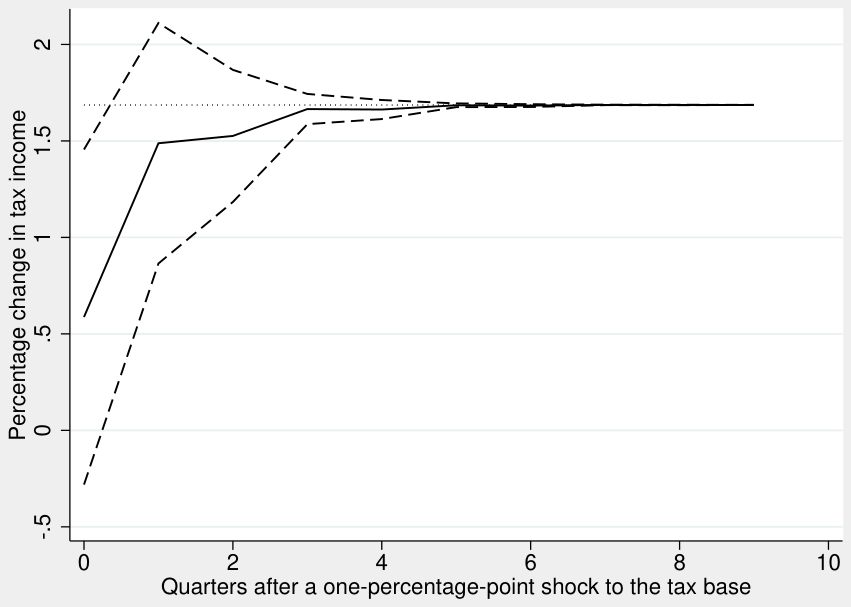
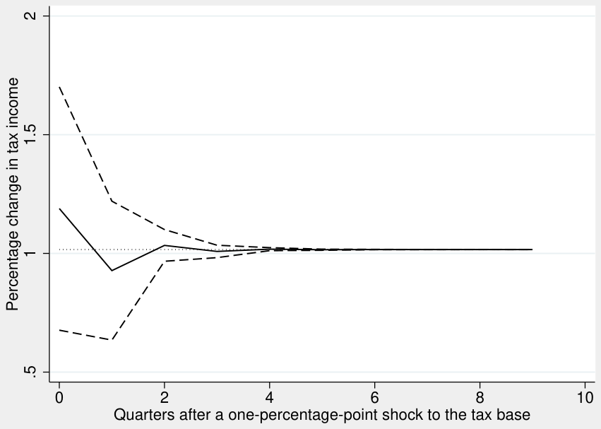
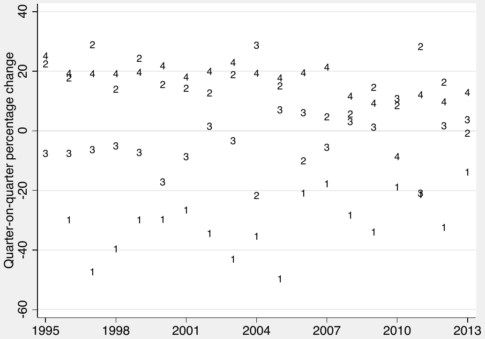

Dynamic elasticities of tax revenue: evidence from the Czech Republic
Tomas Havranek, Zuzana Irsova, Jiri Schwarz (2016), "Dynamic elasticities of tax revenue: evidence from the Czech Republic." Applied Economics 48(60): 5866-5881. doi.org/10.1080/00036846.2016.1186796 The text here is the working paper. It is Czech National Bank Working Paper 8/2015, the openly available version; the version of record is behind the publisher's paywall. The working paper carries a Czech abstract and a nontechnical summary, which the journal article does not.
Tomas Havranek, Zuzana Irsova, and Jiri Schwarz
Tomas Havranek, Economic Research Department, Czech National Bank, and Institute of Economic Studies, Charles University, Prague, tomas.havranek@cnb.cz
Zuzana Irsova, Institute of Economic Studies, Charles University, Prague, zuzana.irsova@ies-prague.org
Jiri Schwarz, Advisor to the Board, Czech National Bank, jiri.schwarz@cnb.cz
The corresponding author is Jiri Schwarz. We acknowledge support from the Czech National Bank (project #D5/14). We thank Robert Ambrisko and Josef Mladek for fruitful discussions on the tax elasticity estimation methodology employed at the Czech National Bank and the Ministry of Finance of the Czech Republic and for providing us with a part of the data set. We are grateful to Jan Babecky, Kamil Dybczak, Kamil Galuscak, Christoph Priesmeier, Vilem Valenta, and seminar participants at the Czech National Bank for their helpful comments. The views expressed here are ours and not necessarily those of the Czech National Bank.
Abstract
Tax revenue elasticities with respect to tax bases are key parameters for the modeling of public finances. Yet the existing studies estimating these elasticities for post-transition countries disregard the effects of tax reforms on tax revenue, which renders their estimates inconsistent. We use a unique data set from the Czech Republic to account for the effects of reforms and estimate both short- and long-run tax revenue elasticities. Our results suggest that the long-run elasticities are 1.4 for wage tax, 0.9 for value added tax, 1.7 for profit tax, and 1 for social security contributions. The adjustment process for value added tax and social security contributions is fast, but for the remaining two categories it is important to distinguish between the short- and long-run elasticities: the initial response of revenue to changes in the bases is weak. In the case of wage tax it takes half a year for the elasticity to surpass unity.
Keywords: Elasticity, error correction models, tax base, tax revenue. JEL Codes: H24, H25, H27.
Abstrakt
Elasticity daňových příjmů vůči odpovídajícím daňovým základům představují klíčové parametry modelování veřejných financí. Studie, které tyto elasticity pro bývalé tranzitivní země odhadují, však neberou ohled na daňové reformy a jejich dopady na daňové příjmy. Publikované odhady jsou tak nekonzistentní. Pomocí unikátních dat o dopadech daňových reforem v České republice odhadujeme krátkodobé a dlouhodobé elasticity daňových příjmů. Naše výsledky ukazují, že daň ze mzdy má dlouhodobou elasticitu 1,4, daň z přidané hodnoty 0,9, daň ze zisku 1,7 a příspěvky na sociální zabezpečení 1. U daně z přidané hodnoty a příspěvků na sociální zabezpečení je reakce daňových příjmů na změnu v daňovém základu rychlá. V případě zbylých dvou kategorií je však prvotní reakce slabá, takže je důležité rozlišovat mezi krátkodobými a dlouhodobými elasticitami. Elasticita daně ze mzdy přesáhne hodnotu 1 až po půl roce.
Nontechnical Summary
The elasticities of tax revenue with respect to changes in the corresponding tax bases constitute an important factor in analyzing and forecasting public finances. Precise estimates of the elasticities are needed not only at the Ministry of Finance, but also at the Czech National Bank, which uses them in fiscal projections that enter the workhorse model which aids monetary-policy making. The elasticities are essential for tax revenue forecasts based on macroeconomic predictions and for cyclical adjustment of public budget balances. Both methods of cyclical adjustment (the European Commission method and the European System of Central Banks method) require estimates of the elasticities for various revenue and expenditure items. Moreover, the calculation of tax multipliers also crucially depends on the estimated values of tax elasticities (Mertens and Ravn, 2014).
In general, there are two ways of obtaining the elasticities of tax revenue with respect to their bases. First, for some tax categories the elasticities can simply be computed as the ratio of the marginal to the average tax rate; sometimes the elasticities are assumed to equal one for simplicity (see, for example, Bezdek et al., 2003). Second, tax revenue (or its change) can be regressed on the corresponding tax base (or its change) to obtain the long-term (or short-term) elasticity. The latter method is currently preferred in the literature (Koester and Priesmeier, 2012), as it gives more information on the precision of the estimates and allows for inference concerning the dynamics of tax collection in response to shocks to the tax base.
Several estimates of the elasticities for the Czech Republic, using either of the two methods, have already been published (Krejdl and Schneider, 2000; Girouard and Andre, 2005; Valenta, 2011; Price et al., 2014). In these studies, as well as in internal materials used at the Czech National Bank and the Ministry of Finance of the Czech Republic, tax revenue elasticities have been estimated by simple linear regression of tax revenue on its base using annual data, or have been calibrated employing expert judgment. Nevertheless, as Bruce et al. (2006) and Koester and Priesmeier (2012) point out, such an approach fails to take into account the dynamic nature of the relationships in question. Not only can tax revenue react differently to short-run and long-run changes of the corresponding tax bases, but a purely short- or long-run analysis can also be misleading due to lags in tax collection or loss carry-forward in profit taxes. Therefore, our estimation approach yields both short- and long-run elasticities and allows for investigating the adjustment process between the two. An important feature of our analysis is that we correct the data set for the effect of tax reforms, which has not been consistently done for Czech data before. We decompose the effect of reforms into quarters, which allows us to use quarterly data, a crucial step considering that we analyze a post-transition economy with no more than 20 years of data available.
Our estimation yields intuitive and relatively tight estimates of the long-run elasticities of tax revenue: 1.4 for wage tax, 0.9 for value added tax, 1.7 for profit tax, and 1 for social security contributions. The instantaneous (short-run) elasticities are always smaller, and it takes time for the response of tax revenue to shocks in the base to reach its equilibrium value. The difference between the short- and long-run elasticity is especially important for wage tax, where the elasticity only exceeds unity after half a year, and even after a year the elasticity is still significantly smaller than its equilibrium value.
1. Introduction
Tax revenue elasticities are crucial parameters for both the fiscal and monetary authorities in every economy for three reasons. First, the elasticities are necessary for forecasting government revenue based on macroeconomic predictions. Second, both commonly used methods of cyclical adjustment of public finances, the European Commission method and the European System of Central Banks method, employ estimates of tax revenue elasticities in order to split the public budget balance into its cyclical and structural part. Third, the calculation of tax multipliers depends crucially on the values of tax elasticities (Mertens and Ravn, 2014). Despite their importance, tax revenue elasticities are often not estimated but only calibrated, especially for emerging and transition economies. Either the calibration is based on the ratio of the marginal to the average tax rate, or, for some tax categories, the elasticity is assumed to equal one.1
The recent literature that employs data from developed countries offers a clear picture of the best practice approach in the estimation of tax revenue elasticities: researchers compute short- and long-run elasticities simultaneously using revenue data adjusted for the effects of tax reforms and tax policy changes (Koester and Priesmeier, 2012). The dynamic nature of the relationships in question, amplified by, among other things, lags in tax collection or tax optimization over short periods, can render purely short-run elasticities that are misleading for practical purposes. On the other hand, focusing solely on long-run elasticities prohibits us from taking into account the process of adjustment to tax base shocks (Bruce et al., 2006).
Correcting the data set for the effects of tax reforms and tax policy changes is a necessary condition for the identification of the elasticity coefficients. An important drawback of elasticities computed with non-adjusted data is that many countries, and emerging and transition economies in particular, face frequent tax system changes. The inconsistency in non-adjusted data introduced by tax reforms significantly reduces the usability of the resulting elasticities for predictions of tax revenue and cyclical adjustment of public balances in countries such as the Czech Republic. But, due to the very limited availability of data on the impact of fiscal reforms in transition economies, the existing literature covering these countries focuses solely on estimating non-adjusted elasticities.
This paper contributes to the literature by estimating both the long-run and short-run tax revenue elasticities and examining the speed of adjustment of tax revenue towards equilibrium using an error correction model with quarterly data. We estimate revenue elasticities for four categories which account for about 90% of all government tax revenue in the Czech Republic, using a unique data set of tax revenue adjusted for the effect of tax reforms and tax policy changes. Our results reveal that, with the exception of value added tax and social security contributions, the short-run elasticities are much smaller than their long-run counterparts: in the case of wage tax, it takes about half a year for the elasticity to reach unity, and even after a year the elasticity remains significantly below its long-run equilibrium value. The long-run elasticity estimates are 1.4 for wage tax, 1.7 for profit tax, 0.9 for value added tax, and 1 for social security contributions.
The remainder of the paper is structured as follows. In section 2 we review the related literature on this topic and discuss the best practice in the estimation of tax revenue elasticities. section 3 describes the data set and explains the selection of tax categories, the definition of tax bases, and the method we use to adjust tax revenue for the effects of tax reforms. We describe the workhorse estimation method in section 4 and discuss our results in section 5. section 6 concludes the paper.
2. Related Literature
The literature on tax elasticities is broad and employs several distinct estimation strategies. First, some elasticities may be derived directly from the tax code, typically by computing the ratio of the marginal to the average tax rate. On the one hand, with this approach the author does not have to adjust the data for tax reform effects and deal with technical estimation issues. On the other hand, tax evasion and the existence of multiple tax brackets, various tax exemptions, allowances, and deductibles constitute an important drawback. Using this method, Girouard and Andre (2005) compute the elasticity of personal income tax and social security contributions relative to earnings for the Czech Republic to be 1.7 and 1.1, and assume both the elasticity of corporate income tax with respect to profits and the elasticity of indirect taxes with respect to consumer expenditure to equal one. Bezdek et al. (2003) estimate the personal income tax elasticity to be 2.2, while Valenta (2011) obtains an elasticity of 1.2 based on the legislation after the introduction of the single rate in 2008. Recently, Price et al. (2014) published revised elasticities for EU member states. For the Czech Republic, they compute the elasticity of personal income tax relative to earnings to be 2.23, where the impact of statutory rate changes vis-á-vis the Girouard and Andre (2005) elasticity is estimated as -0.35, and almost the whole of the rest of the difference is assigned to changes in the income-weighting system. The revised social security contributions elasticity is 0.99.
The second stream of literature estimates tax revenue elasticities using econometric methods. Unlike calculation from the tax code, in this second approach tax revenues have to be related to a corresponding tax base. The true tax bases, which are defined by law, cannot be obtained without a serious time lag—if the aggregate data on these bases are available at all. Because tax revenue elasticities are mainly used for cyclical adjustment and tax revenue forecasts, macroeconomic aggregates updated regularly and in a timely manner have to be used as a proxy for the true bases. The most accessible and straightforward proxy taken from national accounts is nominal GDP. Using this approach, Krejdl and Schneider (2000) estimate the private income tax elasticity at 1.08, find the corporate income tax elasticity to be insignificantly different from zero, and obtain a value added tax elasticity of 0.95. Belinga et al. (2014) estimate total tax revenue with respect to GDP and obtain a short-run elasticity of 1.28 and a long-run elasticity of 1.05. Nevertheless, neither of them adjusts the data for the effects of tax reforms and tax policy changes.
The third, more rigorous approach to estimating the elasticities involves finding more adequate and less aggregated bases for each tax category than nominal GDP. The literature mostly follows the definitions of tax bases used by the European System of Central Banks (see Bouthevillain et al., 2001): the sum of wages and salaries for wage tax, a measure of corporate profits for profit tax, and private consumption statistics for indirect tax. In this framework, Bezdek et al. (2003) estimate corporate income tax and value added tax elasticities with respect to gross operating surplus of firms and private consumption, and obtain an insignificant estimate of 0.4 for the former and 0.8 for the latter. Valenta (2011) obtains an estimate of 1.2–1.5 for the corporate income tax revenue elasticity and 1.0 for the indirect tax revenue elasticity. Neither of these studies takes into account the effects of tax reforms and tax policy changes, nor do they try to estimate both long- and short-run elasticities, which would allow for inference concerning the dynamics of tax collection in response to shocks to the tax base. Price et al. (2014) control for discretionary rate changes by including the tax rate among the explanatory variables and estimate both the short-run and long-run elasticities: 1.29 for corporate income tax in the short term and 1.11 in the long term, with a 3-year average of 1.23; and 0.96 for indirect tax in the short term and 1.32 in the long term, with a 3-year average of 1.08. The approach used tries to adjust for the effects of tax changes, but still in a very simple way, disregarding any effects of reforms which do not translate directly into tax rate change.
The fourth approach to estimating tax elasticities builds on the assumption of a proportional and static relationship between tax revenue and the corresponding tax base, and focuses on estimating how GDP, or another macroeconomic measure of aggregate income, influences individual tax bases. The major advantage of this method is that no revenue adjustment for tax reforms is required. However, on the other hand, the relationship between tax revenue and the tax base is anything but static—especially in emerging economies and countries in transition, which experience frequent changes in tax laws. This observation explains why this approach has not been used to estimate tax elasticities for the Czech Republic.
Over the past couple of years, estimating both long- and short-run tax revenue elasticities in a dynamic setting has become the standard in the literature focusing on developed countries. The reason is that the modern approach allows us to better understand how, for instance, the business cycle influences the dynamics of tax revenue reaction to changes in tax bases. But the differences between short- and long-run elasticities can have more sources, such as discrepancies between the true bases and their macroeconomic proxies, lagged responses of agents to economic shocks, tax optimization over short periods (for example, from one quarter to another), or lags in tax collection.
To name but a few of the many recent results on tax revenue elasticities in countries other than the Czech Republic, Wolswijk (2009) and Bettendorf and Limbergen (2013) use dynamic OLS and data for the Netherlands to obtain long-run elasticities of 0.9–1.0 for value added tax, 0.8–1.6 for personal income tax, and 1 for corporate income tax. Koester and Priesmeier (2012) with German data obtain 0.79 for value added tax, 0.77 for profit tax, and 1.75 for wage tax. Moreover, Machado and Zuloeta (2012) and Fricke and Süssmuth (2014) estimate elasticities for Latin American countries and obtain long-run value added tax revenue elasticity estimates of between 1.4 and 2.6, personal income tax elasticity between 0.9 and 3.0, and corporate income tax elasticity in the range 1.3–3.8. All of these papers use revenue data adjusted for tax reforms and tax policy changes, which is a necessary condition for estimating correct tax revenue elasticities, as we have already noted and will explain in the next section in more detail. Barrios and Fargnoli (2010) and Princen et al. (2013) analyze the topic of discretionary tax measures in the context of EU countries, but do not focus on individual tax elasticities.
To sum up, the estimates of tax elasticities can vary significantly, depending on the method used, the definition of tax bases, adjustment of the data, and, of course, on the source of the data. But the general lesson that can be taken from the existing literature is clear: the prevailing best practice in studies employing data from developed countries is to use close proxies for the true tax bases, allow for adjustment between the short-run and long-run relationships, and correct the tax revenue data for the impact of tax reforms and tax policy changes. This study is the first to use such a methodology to estimate tax elasticities for a transition country.
3. Data
For the calculation of revenue elasticities with respect to their tax bases we focus on the three most important tax categories: wage tax, profit tax, and value added tax; additionally, we include social security contributions—these are not considered taxes under Czech law, but constitute a large fraction of government revenue and function like taxes de facto. Wage tax, called personal income tax in the Czech Republic, probably changed the most over the observed period 1995–2013. Up until 2007 it was levied with progressive tax rates, initially with six tax brackets. The number of tax brackets gradually decreased to four by 2001. In 2008, a proportional flat tax (including a non-taxable minimum income) was introduced, which further decreased the progressivity of the tax system.

Profit tax, called corporate income tax, was levied at a proportional and gradually decreasing rate over the whole observed period (from 41% in 1995 to 19% since 2010). Value added tax had two rates over the whole observed period: the general rate went from 22% to 19% and back to 21%, whereas the reduced rate rose gradually from 5% to 15%. Figure 1 shows that the tax categories included in our analysis constitute about 90% of all tax revenue and social security contributions in recent years. The remaining part of tax revenue comes mostly from excise tax and a couple of other minor categories, such as property tax.
The literature review in the previous section reveals that a large number of empirical studies on tax elasticities do not adjust tax revenue for the effects of discretionary tax reforms. Therefore, such estimates do not fulfill the ceteris paribus condition crucial for correct identification of the elasticity coefficients and should be called “tax buoyancy” instead. An important drawback of buoyancy is that its usability for macroeconomic predictions of tax revenues and the cyclical adjustment of public budget balances is significantly reduced. This observation holds especially for transition and developing countries, where the availability of both ex ante and ex post estimates of the impacts that tax reforms have on tax revenue is scarce compared to developed Western economies with a longer tradition of policy appraisal. In fact, we were not able to find a single empirical study focused on Central and Eastern European countries that estimated policy-neutral tax revenue elasticities.

Figure 2 shows the cumulative effects of tax reforms, which we use to adjust the revenue data and construct policy-neutral time series.2 For example, a reform of value added tax coming into effect in 2004 caused a permanent increase in revenue. Using a slightly modified version of the proportional adjustment method (Prest, 1962) utilized by, for example, Koester and Priesmeier (2012) and Wolswijk (2009), we correspondingly increase all preceding periods by assuming that the permanent effects of a tax reform change proportionally with the corresponding tax revenue. In the case of a policy change temporarily increasing profit tax revenue in 2010, nothing gets propagated either into the future, or into the past. Figure 2 reveals that if all the tax changes up to 2013 had been introduced in 1995, the value added tax revenue would have been almost 42% higher that year.
In contrast, wage tax and profit tax revenue would have been 36% and 60% lower, respectively. Hence we can say, given how the cumulative effects were constructed, that tax revenue in 2013 was affected in the same proportion by the tax reforms implemented. It is therefore no surprise that estimating tax elasticities on unadjusted data yields significantly different, and thus misleading, results. Keeping every other aspect of our estimation strategy unchanged, the long-run tax elasticities (or rather buoyancies) of tax revenues calculated with unadjusted time series would be 1.0 for wage tax, 1.1 for value added tax, 1.3 for profit tax, and 0.9 for social security contributions (compared to the adjusted elasticities of 1.4, 0.9, 1.7, and 1, respectively, which will be discussed later).
Our inputs for the calculation of adjusted tax revenue data come from the Czech National Bank, where they constitute a set of information used for fiscal projections in the central bank’s core prediction model. The data are mostly based on ex ante predictions of the impacts of policy changes taken from the documents accompanying draft bills sent to the Parliament of the Czech Republic. Sometimes, though, they correspond to ex post estimates further adjusted by the Czech National Bank’s experts to fit the realized impacts of fiscal reforms.

Quarterly data on tax revenue are obtained from the Ministry of Finance of the Czech Republic. Value added tax and corporate income tax are used in the same form as provided by the Ministry, but we exclude tax paid by self-employed individuals on the basis of yearly tax returns from the total personal income tax. The reasons for the exclusion are twofold: first, we are interested in wage tax, and self-employed individuals do not earn wages. Second, the excluded subcategory of personal income tax revenue is highly volatile and seems to be divided into quarters only by statistical approximation. Unfortunately, due to the unavailability of more disaggregated data, it was impossible to exclude other income not directly connected to wages but subject to personal income tax, such as capital income and lease income—but these categories do not constitute an important share of households’ income. Due to the unavailability of accrual data at the required level of disaggregation, all tax revenue data are cash-based. This is especially problematic for the profit tax category, where a tax liability may be settled with a lag of up to two years, creating a sizable disparity between accrual and cash-based revenue accounting. Social security contributions data are obtained from the Czech Statistical Office and are the only revenue category calculated on an accrual basis.
The choice of appropriate bases for each tax category follows the European System of Central Banks’ best practice for estimating cyclically adjusted budget balances (Bouthevillain et al., 2001), while taking into account lags in data availability, which could render this method problematic for cyclical adjustment and tax revenue forecasts. As the base for wage tax and social security contributions, we choose the sum of wages and salaries; for profit tax the base is net operating surplus; and for value added tax we choose household consumption and private investment in dwellings. All the data are in nominal terms and have been taken from the Czech quarterly national accounts.
Figure 3 shows the evolution of the ratio of adjusted tax revenue to the corresponding bases. With the exception of the profit tax base and social security contributions time series, which only start in 1999, we have quarterly data covering the period 1995–2013. The ratios of wage and profit tax to their bases were increasing until 2005 and have been relatively stable since then, while the ratio of profit tax revenue to its base has showed more volatility. The ratio of value added tax revenue to its base, on the other hand, was slightly decreasing over the whole period. These movements mainly capture changes in the composition of the tax bases (for example due to tax progressivity and movement across tax brackets with income growth), but also reflect the degree of success in tax collection, changing willingness to pay taxes, and increasing labor productivity over time.
4. Estimation Methodology
Our intention in this paper is to estimate both the short-run (instantaneous) and long-run (equilibrium) elasticity of tax revenue with respect to the corresponding tax base and to analyze the adjustment process between the two elasticities. We start by testing all the time series in our data set for stationarity, employing the Augmented Dickey-Fuller test (Dickey and Fuller, 1981). The results of these tests, available in the Appendix, do not reject the null hypothesis of nonstationarity at any conventionally used level of statistical significance and thus corroborate our intuition that tax revenue and the bases for all tax categories have a unit root.
In consequence, a simple OLS regression of tax revenue on tax bases in levels may bring spurious results and biased estimates of the long-run elasticity and other regression parameters. A simple OLS regression yields consistent estimates of the elasticity if the corresponding time series have an underlying long-run relationship: in other words, when the two time series are cointegrated. After correction for the effects of tax reforms, there is little reason to expect tax revenue not to be closely tied to the evolution of the appropriate tax base in the long term, so we expect to find evidence of cointegration. Indeed, the Engle-Granger cointegration test rejects the null hypothesis of no cointegration at the 1% level of significance for all pairs of tax bases and revenue.
Because all the time series for tax revenue and tax bases in our data set are nonstationary and the pairs of tax bases and revenue are cointegrated of order one for each tax category, we can employ the error correction model to uncover the elasticities and examine the speed of adjustment of tax revenue towards equilibrium. We use the two-step procedure developed by Engle and Granger (1987) and estimate the long-run relationship between tax revenue and tax bases in the first step. We have noted that OLS yields consistent estimates of the regression parameters in this case, but it can be shown that the estimates are inefficient. The long-run equation can be estimated efficiently by dynamic OLS (Stock and Watson, 1993): the method adds to the regression the lags and leads of the change in the tax base.
Unlike most papers in the literature on tax elasticities, we make use of quarterly data, because the annual time series available for the Czech Republic are too short to allow for any meaningful regression analysis. The use of quarterly data brings additional problems, because both tax revenue and tax bases display a strong seasonal pattern. Since there is no consensus on how to treat seasonality within the ECM framework, we evaluate three alternative approaches. In our baseline estimation we include quarterly dummies to capture seasonal differences, and in Appendix A we provide robustness checks that use seasonally adjusted data and that disregard seasonality, respectively. In all estimations we also control for the effects of the substantial tax reform of 2008, which affected all tax categories (the dummy variable may also capture the effect of the crisis; unfortunately, it is impossible to identify these two effects separately). The reporting of value added tax revenue changed in the Czech Republic in 2004 (see Figure A1), and the change particularly affected the seasonal pattern of the reported tax revenue, which is why for this category we also include interaction terms of the quarterly dummies and a dummy variable that corresponds to the change in reporting. The final long-run specification that we estimate takes the following form:
where log revenueti stands for the logarithm of tax revenue in period t for category i (wage tax, value added tax, profit tax, or social security contributions), β0i is a category-specific intercept, log baseti is the logarithm of the corresponding tax base in period t for category i, β1i is the long-run elasticity j i i of tax revenue with respect to the corresponding tax base, ∑l=− j γl ∆ log baset+l represents leads and lags of the change in the logarithm of the tax base (because of data limitations, we only use one lead and lag in our baseline specifications; we also experimented with other lag and lead lengths, but the results did not change qualitatively), reformt denotes a dummy variable that equals one for all time periods starting with the first quarter of 2008, quarterk stands for quarterly dummies, and breakti represents a dummy variable that equals one for all time periods starting with the first quarter of 2004 for value added tax.
To estimate the short-run elasticity we move to the second stage of our error-correction-model approach. In the specification corresponding to the short run we evaluate the relationship between changes in tax revenue and changes in the corresponding tax base while taking into account the adjustment towards the long-run equilibrium estimated in equation (1). To be specific, we include the lagged value of the estimated residuals from the long-run equation, which suggests whether tax revenue is below or above its equilibrium level. The regression coefficient that we get from the short-run equation on the lagged residual from the long-run equation gives us information about the speed of adjustment of tax revenue towards equilibrium: it is the percentage of the gap between the actual and equilibrium value that is closed each quarter. We also include a lagged value of the change in tax revenue to account for the potential persistence of shocks to tax collection. The final specification of our short-run regression reads
where ∆ log revenueti = log revenueti − log revenuet−1 i stands for the change in the logarithm of the tax revenue between periods t − 1 and t for category i, α0i is a category-specific intercept, ∆ log baseti is the change in the logarithm of the corresponding tax base in period t for category i, α1i is the short-run elasticity of tax revenue with respect to the corresponding tax base, ε̂t−1 i represents a lagged i residual from the cointegrating relationship (1), α3 measures the speed of adjustment, reformt denotes a dummy variable that equals one for all time periods starting with the first quarter of 2008, quarterk stands for quarterly dummies, and breakti represents a dummy variable that equals one for all time periods starting with the first quarter of 2004 for value added tax.
In all of our long-run estimations we use Newey-West standard errors (Newey and West, 1987), which are robust to autocorrelation and heteroscedasticity. In the second stage we also test for
potential remaining autocorrelation, but do not find any in our baseline regressions. An issue that we do not address fully in this paper is the potential endogeneity of tax bases with respect to tax revenue in the long-run equation; unfortunately, we find it unfeasible to obtain valid instruments for the tax bases. We tried to address the endogeneity problem indirectly by estimating the long-run specification with simple OLS but lagged (instead of contemporaneous) values of the tax base; the resulting elasticity is close to the one presented in the main results of the paper. The dynamic OLS specification also partially takes the potential endogeneity into account (Masih and Masih, 1999). Finally, using our long- and short-run estimates, we construct impulse-response functions of tax revenue to shocks to the tax base. The bounds of the 95% confidence interval of the impulse response are bootstrapped using 10,000 iterations following the approach of Koester and Priesmeier (2012).
5. Results
We present the estimated error correction models that include quarterly dummies in Table 1. The two robustness checks in Appendix A address the treatment of seasonality and yield very similar results in terms of the long-run elasticities of tax revenue with respect to tax bases. Differences emerge for the behavior of the model in the short term: with seasonally adjusted data all short-run elasticities are statistically significant at the 5% level and smaller than the long-run elasticities; in contrast, when seasonality is ignored, we obtain a short-run elasticity larger than the long-run one for value added tax (again, all elasticities are statistically significant). The baseline model yields less precise estimates of the short-run elasticities, but the confidence intervals of the estimates do not exclude the values found by the two robustness checks, which is another reason why we prefer the model with seasonal dummies and use it as our baseline estimation.
Table 1 shows the results for all four categories: wage tax, value added tax, profit tax, and social security contributions. The top panel of the table provides estimates corresponding to the long-run relationship between the values of tax revenue and tax bases; the bottom panel provides the short-run results. In all estimations we find that the error correction term (the residual from the long-run equation) is statistically significant at the 1% level and negative, which is consistent with the case where the assumptions of the error correction model are met: in other words, the negative sign means that when tax revenue is above its equilibrium value, a fraction of the gap between the current and equilibrium value is closed in the next period. The inverse of the estimated adjustment coefficient can be interpreted as the speed of adjustment (although this interpretation is complicated by the fact that we allow for persistence of the changes in tax revenue, which also influences the adjustment process). We find no evidence of any remaining autocorrelation in the short-term segment of our baseline model.
| Wage tax | Valued added tax | Profit tax | Social security | |
|---|---|---|---|---|
| Long run | ||||
| base (LR elasticity) | 1.445*** | 0.867*** | 1.687*** | 1.016*** |
| (0.0493) | (0.0472) | (0.169) | (0.0150) | |
| quarter 1 | 0.0210 | -0.260*** | 0.0188 | 0.0971*** |
| (0.0337) | (0.0935) | (0.159) | (0.0263) | |
| quarter 2 | -0.234*** | -0.130 | 0.249*** | 0.0600 |
| (0.0527) | (0.143) | (0.0756) | (0.0395) | |
| quarter 3 | -0.0726 | -0.205*** | -0.0265 | 0.0772** |
| (0.0437) | (0.0688) | (0.172) | (0.0372) | |
| 2008 reform | -0.0724*** | -0.0384** | 0.0212 | -0.000671 |
| (0.0240) | (0.0180) | (0.0680) | (0.00845) | |
| Short run | ||||
| ∆base (SR elasticity) | 0.316* | 0.453 | 0.587 | 1.189*** |
| (0.165) | (0.757) | (0.411) | (0.242) | |
| ∆revenuet−1 | -0.191* | 0.147 | -0.157 | -0.0804 |
| (0.102) | (0.121) | (0.133) | (0.125) | |
| residual_LRt−1 (adjustment) | -0.536*** | -1.109*** | -0.903*** | -0.960*** |
| (0.110) | (0.178) | (0.193) | (0.172) | |
| quarter 1 | -0.108*** | -0.464*** | 0.245* | 0.0991** |
| (0.0373) | (0.0942) | (0.134) | (0.0402) | |
| quarter 2 | -0.223*** | 0.0441 | 0.497*** | 0.0105 |
| (0.0248) | (0.0511) | (0.0954) | (0.0169) | |
| quarter 3 | 0.0320 | -0.290*** | -0.0465 | 0.00996 |
| (0.0309) | (0.0414) | (0.125) | (0.0194) | |
| 2008 reform | -0.0241** | -0.0241 | -0.0511 | 0.00156 |
| (0.00916) | (0.0234) | (0.0546) | (0.00768) | |
| Autocorrelation () | 0.101 | 0.648 | 0.719 | 0.835 |
| Observations | 73 | 73 | 57 | 58 |
Notes: The response variable is tax revenue for the long-run estimation and growth of tax revenue for the short-run estimation. The long-run specification is estimated by dynamic OLS with the Newey-West correction for standard errors (heteroscedasticity and autocorrelation-robust up to lag 4); the additional controls included in the dynamic OLS (lags and leads of the tax base) are not reported for ease of exposition. Also unreported is the constant, which is included in both the short- and long-run estimation. The regressions for value added tax additionally include unreported interactions of quarterly dummies and a dummy variable break, which equals one for all observations occurring after the last quarter of 2003 (a major change in reporting value added tax revenue in the Czech Republic). The short-run specification is estimated with OLS, and we report the statistic for Durbin's alternative test of autocorrelation in this specification (in all cases we do not reject the null hypothesis of no autocorrelation). Residual_LR denotes residuals from the long-run equation. Reform denotes a dummy variable that equals one for observations occurring after the last quarter of 2007 (the implementation of a major tax reform in the Czech Republic).
We summarize our results graphically by using impulse-response functions of tax revenue to shocks to the tax base. The function is constructed by simulating the percentage change in tax revenue in response to a one-percentage-point increase in the corresponding tax base. Figure 4 shows the impulse response for wage tax: the solid line denotes the impulse response function, the dashed lines denote bootstrapped 95% confidence intervals, and the dotted line represents the long-run elasticity. In time period zero, the value of the impulse response function equals the short-run elasticity. While the short-run elasticity of about 0.3 is statistically indistinguishable from zero at the 5% level of significance (it is only significant at the 10% level), it is significantly smaller than the long-run elasticity of 1.4. The adjustment is relatively slow, with the error correction coefficient implying that about 50% of the gap between the actual and equilibrium value is closed each period, but the process is slowed down by the persistence of changes in tax revenue (we leave the corresponding variable in the model even though it is borderline statistically insignificant at the 5% level). It takes about half a year for the elasticity to reach unity, and even after a year the elasticity is significantly below its equilibrium value. The tax reform of 2008 represents an important break in our data even though we correct for the effect of all tax reforms; one potential explanation is that the timing of the reform coincides with the onset of the late-2000s crisis, which led to a sudden drop in tax revenue.

The impulse-response function for value added tax is shown in Figure 5. Because of a major change in the reporting of value added tax in 2004 that affected the reported composition of tax revenue into quarters (see Figure A1), we include interaction terms of the break dummy with quarterly dummies. Similarly to the case of wage tax the reform dummy is statistically significant at the 5% level, but here only for the long-run block of the model (the result holds across the two robustness checks). In the case of value added tax the adjustment process is fast, and the gap between the actual and equilibrium value of tax revenue is closed the very next period with a slight overshooting, which is nevertheless statistically insignificant. The short-run elasticity reported by our baseline estimation is statistically indistinguishable from both zero and the long-run elasticity. When we use seasonally adjusted data, the short-run elasticity becomes statistically significant at the 5% level, but is still very close to the long-run elasticity. When seasonality is ignored, we obtain a very large estimate of the short-run elasticity. In sum, our estimates of the short-run elasticity in this case are imprecise, and because the adjustment process is so fast, for any practical purposes it suffices to use the long-run coefficient, which is approximately 0.9 in all three of our estimation models.

The results concerning profit tax are reported in Figure 6. All three estimation models imply that the short-run elasticity of about 0.6 is significantly smaller than the long-run elasticity of 1.7, and even though the adjustment is faster than in the case of wage tax, in the first two quarters after the change in the tax base it is still important to take the adjustment lag into account and distinguish between the short- and long-run elasticity. The estimated long-run elasticity is remarkably stable no matter how we treat seasonality in the model, and the short-run elasticity only changes a little. The dummy variable that controls for the substantial tax reform of 2008 (or, potentially, the crisis of the late 2000s) is not statistically significant in either the long or the short run, which suggests that the structural break was only important for wage and value added taxes.

The impulse response function for social security contributions is depicted in Figure 7. Unlike the previous cases, we observe a very fast adjustment process and an almost one-to-one relationship between revenue from social security contributions and the corresponding base. The short-run elasticity is 1.19, while the long-run elasticity is 1.02, both statistically indistinguishable from unity. Similarly to the case of profit tax, the dummy variable for the substantial 2008 reform is statistically insignificant. The results hold when different approaches to seasonal adjustment, reported in the Appendix, are considered.

6. Concluding Remarks
In this paper we use an error correction model to estimate short-run and long-run tax revenue elasticities in the Czech Republic with respect to the corresponding tax bases. We focus on four categories of government revenue: value added tax, wage tax, profit tax, and social security contributions; and use a unique data set of tax revenue adjusted for the effects of tax reforms and tax policy changes covering the period from 1995 to 2013 on a quarterly basis.
Concerning value added tax, we would intuitively expect the revenue elasticity to equal one. Nevertheless, our estimated long-run elasticity of 0.9 is plausible as well, given that the share of housing-related expenditure (which has been either subject to a reduced tax rate or exempted from value added tax altogether during the whole observed period) in our tax base has been steadily increasing since 1995, and doubled by 2013. Moreover, anecdotal evidence suggests that value added tax collection can be plagued by tax evasion, which may also help explain why the elasticity lies slightly below unity.
Our estimate of the long-run wage tax revenue elasticity, 1.4, is consistent with the progressivity of personal income tax in the Czech Republic. Nevertheless, the short-run elasticity only equals 0.3 and the adjustment process appears to be relatively slow: it takes two quarters for the elasticity to reach unity, and even after a year the elasticity still remains significantly below its equilibrium long-run value. One potential explanation for the collection lag might be the additional tax revenue from tax returns (submitted by April for the previous calendar year), which might be particularly significant if the person holds two or more jobs. Especially in the case of wage tax elasticity, therefore, the dynamics seem to be crucial and have to be taken into account in order to model the behavior of tax revenues correctly. In general, the estimates of revenue elasticities concerning both value added and wage tax are broadly comparable with those found in the existing literature. An issue related to wage tax elasticity is the elasticity of social security contributions, which we estimate to be close to 1: in other words, revenue from social security contributions reacts one-to-one to changes in the corresponding tax base.
More puzzling is our estimate of the profit tax revenue elasticity, which equals 1.7 in the long run. Given the proportionality of corporate income tax, we would expect this elasticity to be close to one. But even a single-bracket tax system is prone to the so-called “fiscal drag” due to a usually large number of various deductions, as shown by Creedy and Gemmell (2008). Koester and Priesmeier (2012) note that many previous studies find the elasticity to exceed unity (for example, Bouthevillain et al., 2001; Breuer, 2010; Kremer et al., 2006). Furthermore, the available tax base only includes operating income and disregards other sources of taxable income, which may create an upward bias compared to the theoretically true elasticity. Because, however, the theoretically correct tax base is unavailable for policy analysis, our results suggest that using a unitary elasticity can lead to overly pessimistic predictions of profit tax revenues during booms and overly optimistic predictions during recessions. The potentially large disparity between more precise but unavailable accrual-based tax revenue and the cash-based data used could also have contributed to the high estimate of the profit tax revenue elasticity.
In a nutshell, our analysis provides relatively robust estimates of long-run tax revenue elasticities for the Czech Republic, highlights the importance of estimating both short- and long-run elasticities in a dynamic setting, and provides a framework for adjusting tax revenue data in transition countries for the effects of tax reforms and tax policy changes.
REFERENCES
- Ambrisko, R., V. Augusta, D. Hajkova, P. Kral, P. Netusilova, M. Rikovsky, and P. Soukup (2012): “Fiscal Discretion in the Czech Republic in 2001-2011: Has It Been Stabilizing?.” Research and Policy Notes 2012/01, Czech National Bank, Research Department.
- Barrios, S. and R. Fargnoli (2010): “Discretionary measures and tax revenues in the run-up to the financial crisis.” European Economy - Economic Paper 419, European Commission.
- Belinga, V., D. Benedek, R. A. D. Mooij, and J. Norregaard (2014): “Tax Buoyancy in OECD Countries.” IMF Working Paper 14/110, International Monetary Fund.
- Bettendorf, L. and D. V. Limbergen (2013): “The stability of tax elasticities in The Netherlands.” CPB Discussion Paper 256, CPB Netherlands Bureau for Economic Policy Analysis.
- Bezdek, V., K. Dybczak, and A. K. Krejdl (2003): “Czech Fiscal Policy: Introductory Analysis.” Working Papers 2003/07, Czech National Bank, Research Department.
- Bouthevillain, C., P. Cour-Thimann, G. van de Dool, P. Hernández de Cos, G. Langenus, M. Mohr, S. Momigliano, and M. Tujula (2001): “Cyclically adjusted budget balances: an alternative approach.” Working Paper Series 0077, European Central Bank.
- Breuer, C. (2010): “The Revenue Dynamics of Assessed Taxes in Germany.” Working paper, University of Munich.
- Bruce, D., W. F. Fox, and M. Tuttle (2006): “Tax Base Elasticities: A Multi-State Analysis of Long-Run and Short-Run Dynamics.” Southern Economic Journal, 73(2):315–341.
- Creedy, J. and N. Gemmell (2008): “Corporation tax buoyancy and revenue elasticity in the UK.” Economic Modelling, 25(1):24–37.
- Dickey, D. A. and W. A. Fuller (1981): “Likelihood Ratio Statistics for Autoregressive Time Series with a Unit Root.” Econometrica, 49(4):1057–72.
- Engle, R. F. and C. W. J. Granger (1987): “Co-integration and Error Correction: Representation, Estimation, and Testing.” Econometrica, 55(2):251–76.
- Fricke, H. and B. Süssmuth (2014): “Growth and Volatility of Tax Revenues in Latin America.” World Development, 54:114–138.
- Girouard, N. and C. Andre (2005): “Measuring Cyclically-adjusted Budget Balances for OECD Countries.” OECD Economics Department Working Papers 434, OECD Publishing.
- Koester, G. B. and C. Priesmeier (2012): “Estimating dynamic tax revenue elasticities for Germany.” Discussion Papers 23/2012, Deutsche Bundesbank, Research Centre.
- Krejdl, A. and O. Schneider (2000): “Structural Deficits in Czech Public Finances.” Czech Journal of Economics and Finance, 50(3):160–174.
- Kremer, J., C. Rodrigues Braz, T. Brosens, G. Langenus, S. Momigliano, and M. Spolander (2006): “A disaggregated framework for the analysis of structural developments in public finances.” Working Paper Series 0579, European Central Bank.
- Machado, R. and J. Zuloeta (2012): “The Impact of the Business Cycle on Elasticities of Tax Revenue in Latin America.” IDB Working Paper Series No. IDB-WP-340, Inter-American Development Bank.
- Masih, A. M. M. and R. Masih (1999): “Is a significant socio-economic structural change a pre-requisite for ‘initial’ fertility decline in the LDCs? Evidence from Thailand based on a multivariate cointegration/vector error correction mode.” Journal of Population Economics, 12(3):463–487.
- Mertens, K. and M. O. Ravn (2014): “A reconciliation of SVAR and narrative estimates of tax multipliers.” Journal of Monetary Economics, 68(S):S1–S19.
- Newey, W. K. and K. D. West (1987): “A Simple, Positive Semi-definite, Heteroskedasticity and Autocorrelation Consistent Covariance Matrix.” Econometrica, 55(3):703–08.
- Prest, A. R. (1962): “The Sensitivity of the Yield of Personal Income Tax in the United Kingdom.” The Economic Journal, 72(287):576–596.
- Price, R. W., T.-T. Dang, and Y. Guillemette (2014): “New Tax and Expenditure Elasticity Estimates for EU Budget Surveillance.” OECD Economics Department Working Papers, Organisation for Economic Co-operation and Development., Paris.
- Princen, S., G. Mourre, D. Paternoster, and G.-M. Isbasoiu (2013): “Discretionary tax measures: pattern and impact on tax elasticities.” European Economy - Economic Papers 499, European Commission.
- Stock, J. H. and M. W. Watson (1993): “A Simple Estimator of Cointegrating Vectors in Higher Order Integrated Systems.” Econometrica, 61(4):783–820.
- Valenta, V. (2011): “Interactions between Fiscal Policy and Real Economy in the Czech Republic: A Quantitative Analysis.” PhD thesis, University of Economics, Prague.
- Wolswijk, G. (2009): “The Short- and Long-Run Tax Revenue Response to Changes in Tax Bases.” Economics Bulletin, 29(3):1960–1970.
Appendix A: Supplementary Material and Robustness Checks

| Wage tax | Valued added tax | Profit tax | Social security | |
|---|---|---|---|---|
| Long run | ||||
| base (LR elasticity) | 1.452*** | 0.939*** | 1.683*** | 1.012*** |
| (0.0490) | (0.0452) | (0.166) | (0.0155) | |
| 2008 reform | -0.0779*** | -0.0408** | 0.0157 | 0.00797 |
| (0.0232) | (0.0188) | (0.0658) | (0.00799) | |
| Short run | ||||
| ∆base (SR elasticity) | 0.801*** | 0.789** | 0.790** | 0.805*** |
| (0.126) | (0.300) | (0.368) | (0.0905) | |
| ∆revenuet−1 | -0.120 | 0.175 | -0.189 | -0.0619 |
| (0.0857) | (0.115) | (0.125) | (0.0825) | |
| residual_LRt−1 (adjustment) | -0.598*** | -1.317*** | -0.897*** | -1.006*** |
| (0.111) | (0.176) | (0.188) | (0.145) | |
| 2008 reform | -0.0146 | -0.00349 | -0.0494 | -0.00466 |
| (0.00961) | (0.0228) | (0.0541) | (0.00596) | |
| Autocorrelation () | 0.765 | 0.319 | 1.483 | 1.979 |
| Observations | 73 | 73 | 57 | 58 |
Notes: The response variable is tax revenue for the long-run estimation and growth of tax revenue for the short-run estimation. The long-run specification is estimated by dynamic OLS with the Newey-West correction for standard errors (heteroscedasticity and autocorrelation-robust up to lag 4); the additional controls included in the dynamic OLS (lags and leads of the tax base) are not reported for ease of exposition. The short-run specification is estimated with OLS, and we report the statistic for Durbin's alternative test of autocorrelation in this specification (in all cases we do not reject the null hypothesis of no autocorrelation). Residual_LR denotes residuals from the long-run equation. Reform denotes a dummy variable that equals one for observations occurring after the last quarter of 2007 (the implementation of a major tax reform in the Czech Republic).
| Wage tax | Valued added tax | Profit tax | Social security | |
|---|---|---|---|---|
| Long run | ||||
| base (LR elasticity) | 1.460*** | 0.886*** | 1.736*** | 0.990*** |
| (0.0545) | (0.0782) | (0.152) | (0.0151) | |
| 2008 reform | -0.0730*** | -0.0541** | -0.00805 | 0.0170** |
| (0.0237) | (0.0211) | (0.0692) | (0.00716) | |
| Short run | ||||
| ∆base (SR elasticity) | 0.371*** | 2.690*** | 0.954*** | 0.556*** |
| (0.140) | (0.293) | (0.234) | (0.0676) | |
| ∆revenuet−1 | -0.0218 | -0.0687 | -0.226** | -0.309*** |
| (0.107) | (0.0890) | (0.108) | (0.0743) | |
| residual_LRt−1 (adjustment) | -0.804*** | -1.028*** | -0.942*** | -0.826*** |
| (0.259) | (0.205) | (0.212) | (0.124) | |
| 2008 reform | -0.0207 | 0.0218 | -0.0433 | -0.0118* |
| (0.0258) | (0.0342) | (0.0727) | (0.00661) | |
| Autocorrelation () | 11.215*** | 27.027*** | 0.013 | 0.234 |
| Observations | 73 | 73 | 57 | 58 |
Notes: The response variable is tax revenue for the long-run estimation and growth of tax revenue for the short-run estimation. The long-run specification is estimated by dynamic OLS with the Newey-West correction for standard errors (heteroscedasticity and autocorrelation-robust up to lag 4); the additional controls included in the dynamic OLS (lags and leads of the tax base) are not reported for ease of exposition. The short-run specification is estimated with OLS, and we report the statistic for Durbin's alternative test of autocorrelation in this specification. Residual_LR denotes residuals from the long-run equation. Reform denotes a dummy variable that equals one for observations occurring after the last quarter of 2007 (the implementation of a major tax reform in the Czech Republic).
| Augm. Dickey-Fuller | 5% crit. value | Engle-Granger | 5% crit. value | |
|---|---|---|---|---|
| Wage tax (revenue) | -2.009 | -2.913 | -14.064 | -3.419 |
| Wage tax (base) | -1.548 | -2.913 | -14.064 | -3.419 |
| Value added tax (revenue) | -2.359 | -2.913 | -11.33 | -3.419 |
| Value added tax (base) | -1.981 | -2.913 | -11.33 | -3.419 |
| Profit tax (revenue) | -1.304 | -2.913 | -7.538 | -3.442 |
| Profit tax (base) | -1.762 | -2.926 | -7.538 | -3.442 |
| Social security (revenue) | -2.792 | -2.926 | -7.765 | -3.442 |
| Social security (base) | -1.548 | -2.913 | -7.765 | -3.442 |
Notes: The null hypothesis of the augmented Dickey-Fuller test is the existence of a unit root; the null hypothesis of the Engle-Granger test is the absence of a cointegrating relationship.
ENDNOTES
- It is important to note that sometimes calibration of elasticities can provide benefits over econometric estimation. For example, with the short time series available for many transition countries, it might be infeasible to account for potential structural breaks in the elasticities using the econometrics approach.
- More details about tax reforms in the Czech Republic, as well as about individual revenue items, are available in Ambrisko et al. (2012).